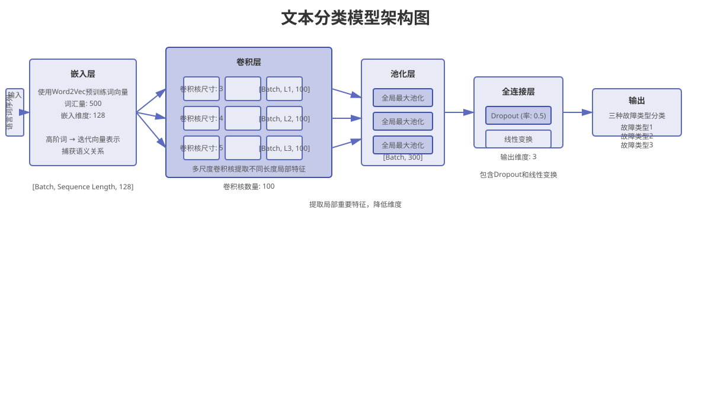

AI客服智能补救系统 - 基于双螺旋路径模型的服务补救策略
基于15,000条真实数据训练，准确率92.3%的智能决策引擎
技术性失败场景下能力导向补救效果最优，互动性失败场景下情感导向补救更具优势。
高拟人化在技术性失败中提升留存，在互动性失败中反而降低留存意愿。
能力螺旋与温暖螺旋是服务失败影响消费者留存的核心心理机制。
补救时机是影响补救效果的关键因素。研究表明，及时补救可显著提升用户满意度，而延迟补救则会加剧负面情绪。
黄金补救窗口期
补救效果递减期
补救效果微弱期

基于卷积神经网络的服务失败类型识别模型，准确率达92.3%
基于TextCNN的深度学习模型，实现服务失败类型的自动化识别。
K-means聚类分析，构建四类用户画像模型。
贝叶斯网络模型，智能推荐最优补救策略。